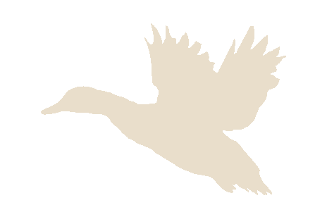

O Plemenu

Francouzský ohař krátkosrstý
Charakteristika plemene
Stejně jako ostatní kontinentální krátkosrstí ohaři, i tento francouzský má mezi svými předky původní stavěče s krátkou srstí, kteří se vyskytovali v oblastech při Středozemním moři.
Toto plemeno se ustálilo selekcí, která byla prováděna gaskoňskými farmáři za zcela jednoznačným účelem. Potřebovali psa odolného, funkčního a vytrvalého, schopného pracovat v nelehkých podmínkách jeho domoviny, francouzského Jihozápadu, v různých terénech a často za značného vedra. Místní lovci loví různou drobnou zvěř v rozličných krytinách, a tak jejich psi musí zvládnout práci v horách, na vřesovištích, na pláních, v landách (borové porosty s vysokým, neprostupným trnitým podrostem) i na písečných dunách při mořském pobřeží a musí stejně dobře lovit orebice, koroptve, holuby, bažanty či bekasiny, jako vodní ptactvo. Lovecký den přitom trvá mnohdy od rána do večera, v lovecké sezóně se loví několik dní v týdnu, a tak obstojí jem ti nejlepší. Odolnost francouzských krátkosrstých ohařů byla vždy vyhlášená a již v roce 1873 napsal pan La Neuville ve své knize o lovu se stavěcími psy: „je to jediné plemeno, odolné proti vedřinám“
Robustní zdraví, velká odolnost a otužilost je jednou z nejvýraznějších charakteristik francouzského krátkosrstého ohaře. Další pro něj typické vlastnosti jsou ovladatelnost, snadná přizpůsobivost terénu i prostředí, v němž je chován, výborná kvalita nosu, a velká snaha vyhledat zvěř. Styl hledání se poněkud liší podle typu, ke kterému ten který jedinec patří. U gaskoňského, těžšího a původnějšího typu, je hledání pomalejší a rozvážnější, u typu pyrenejského, odlehčeného, je hledání rychlé a prostorné. Pyrenejský typ se proto lépe hodí pro soutěže typu Field-Trials. Společnou, velmi typickou vlastností obou typů je vrozený aport s velmi jemným stiskem zubů. Je pochopitelné, že tito psi, používaní k lovu malých druhů pernaté zvěře, nesměli lovci znehodnotit jeho úlovek mačkáním. Psi s tvrdým stiskem nebyli žádoucí a byli z lovecké praxe a tím i z plemenitby, vyřazováni.

Tím, že bylo plemeno šlechtěno výhradně na výkon, povedlo se dospět k rase, která nepotřebuje dlouhý či náročný výcvik, neboť většina vlastností, nezbytných pro použití v praxi, je jí vrozena.
Nový rozvoj francouzských krátkosrstých ohařů přišel s nástupem XX. století. V té době ovlivňovali chov Dr. Casteux, který pokračoval v chovu původního, těžšího typu, a pan SenecLagrande, rovněž Gaskoněc, který se obrátil k fixaci menšího a lehčího typu. Tito pánové tak přispěli k definitivnímu oddělení obou typů. Těžší byl nazván gaskoňský a lehký pyrenejský. Potřebu odlehčeného, pyrenejského typu zdůvodňovat pan Lagrande v roce 1924 stoupajícími náklady na držení velkého psa, a také tím, že se malý pes mnohem snadněji umisťoval v automobilu i v bytě a byl tedy přijatelnější pro městské myslivce. K oficielnímu oddělení obou typů došlo v roce 1971, kdy bylo přiznáno udělování titulů CACIB na výstavách každému typu zvlášť a bylo zakázáno jejich vzájemné páření.
Během vývoje plemene došlo záměrně několikrát k přilití krve anglických pointrů, kteří měli upevnit kvality francouzských krátkosrstých ohařů v poli. Vybraní zlepšovatelé měli tu nejvyšší kvalitu, jaké byla v té době u anglického pointra vůbec k dispozici. Jednalo se o dva vítěze soutěží Grand Quete, psy Hello de Preuilly a patrně vůbec nejslavnějšího italského pointra Or del Cecina. Tito psi zanechali nesmazatelnou stopu v chovu francouzských krátkosrstých ohařů přes svoje slavné potomky, plemeníky Samsona de Beyris a Iskera de la Ruelle Fleurie. V dnešním chovu francouzských krátkosrstých ohařů bychom asi jen těžko hledali jedince, který by neměl ve svém původu zastoupeného aspoň jednoho z těchto psů
Standard FCI č. 234/07.08.1998/F
Překlad z francouzského textu:
Helena Dvořáková
Původ:
Francie
Datum zveřejnění platného standardu:
06.05.1988
Použití:
stavěcí pes (ohař)
Klasifikace F.C.I.:
skupina 7; stavěcí psi (ohaři); sekce 1.1; kontinentální stavěči (ohaři), typ krátkosrstý (braque)
s pracovní zkouškou.

Francouzský krátkosrstý ohař malého typu, typu zvaného „pyrenejský“, má všechny proporce shodné
s velkým typem „gaskoňským“ ovšem ve zmenšených dimenzích a celkově v lehčí formě. Nejsou mezi
nimi jiné rozdíly, než níže uvedené:
Celkový vzhled:
je to odolný pes, prostý známek jakékoli lymfatičnosti, jemný, ale dostatečně
svalnatý.
Nos:
je hnědě zbarvený, nozdry jsou otevřené
Uši:
jsou zavěšeny nad linií očí, nestáčejí se téměř. Natažené dosahují 2 cm od začátku nosu.
Krk:
má jenom nepatrný nebo žádný lalok.
Břicho:
není tak volné, jako u „gaskoňského“.
Ocas:
je jemný. Může být krácený nebo krátký od narození.
Hrudní končetiny:
jsou slabší než u „gaskoňského“.
Lopatky:
svalnaté, středně šikmé.
Tlapky:
pevné, prsty sevřené.
Srst:
je jemnější než u „gaskoňského“
Výška:
psi: 47 - 58 cm; Feny: 47 - 56 cm
Nejvyhledávanější výška je v rozmezí 50 - 55 cm, což je ideální výška pro ten způsob použití, pro který je pes používán.
Pracovní standart
Francouzský krátkosrstý ohař
je pes jemné povahy , sympatický, velmi inteligentní, který však se
neblíží typem svého pohybu ani anglickým ani německým ohařům. Plemeno typu pyrenejského má
odlišný styl od typu gaskoňského.
CVAL:
Cval musí být pružný a ekonomický, někdy přerušovaný, když se pes dostane do pachu.
Cval typu pyrenejského je rychlejší, vcelku je více konstantní.
HLEDÁNÍ:
Musí být prostorné a otevřené, pokrývající velký prostor, ale francouzský ohař , který pracuje s
inteligencí a používá svůj instinkt, nesmí nikdy působit dojmem , že pracuje naučeně, mechanicky.
Pokud se někdy točí nazpět a vrací se téměř na stejné místo, je to proto, že brání možnosti, že
přítomná zvěř unikne nebo uletí. Tato charakteristická vlastnost, stejně tak jako ověřování stop,
pokud je ospravedlnitelné a krátké, nemá být považována za chybu, spíše naopak.
NESENÍ HLAVY:
Hlava je nesena v akci téměř v prodloužené linii hřbetu , ovšem není to neměnná poloha, ta se může
měnit, někdy je nesena nad a někdy pod linií hřbetu, jak pes reaguje na pachy zvěře v terénu. Dělá
dojem psa, který dominuje situaci. Je velmi pozorný a vzhledem k mobilitě jeho hlavy mu žádný
pach nemůže uniknout.
VYSTAVOVÁNÍ:
Je velmi pevné, avšak nikoli přehnaně strnulé. Naši stavěcí psi si zachovávají plně schopnost
postupování /COULÉ/ ; ideální pozice francouzského krátkosrstého ohaře při vystavování je pozice ve
stoje. Hlava směřuje směrem k místu vyzařování pachu, uši jsou mírně pozvednuté, pohled strnulý,
prut je méně pozvednutý, než u německého krátkosrstého ohaře, nepohyblivý. Je‐li vůdce příliš
daleko, pes může otočit hlavu směrem k němu, ale hned ji stočí směrem ke zvěři, aby znal její
přesnou polohu. V této chvíli musí být pes bez pohybu, nesmí se samovolně přibližovat ke zvěři, jen
na pokyn vůdce. Pokud pes přijde do pachu zvěře na konci smyčky nebo při točícím se větru, může
vystavovat vleže.
POSTUPOVÁNÍ:
Může být méně energické a rychlé, ale vždycky autoritativní. V každém případě francouzský ohař
musí zůstat v kontaktu , někdy musí popoběhnout, to v případě, že zvěř i přes autoritativní
postupování se vzdálí na větší vzdálenost. Pak musí pes sledovat několik metrů stopu, aby se znovu
dostal do pachu (větru). Pes musí zůstat klidný po vzletu i výstřelu.
PŘINÁŠENÍ:
Schopnost mrtvou nebo zraněnou zvěř dohledat je mnohem důležitější, než způsob jejího přinesení
vůdci. Pes může stopu ztratit, pokud ji sleduje příliš rychle a s vysokým nosem, jestliže není pach dost
silný a vysoko vyzařující. Slabý pach, vyzařující jen nízko u země, ve slabém větru pes sleduje krokem
či klusem. Jemný stisk je velmi žádoucí. Rychlost, s níž se pes s aportem blíží k vůdci, má jen relativní
význam, ale přinášení musí být radostné, aniž by si však pes se zvěří pohrával.